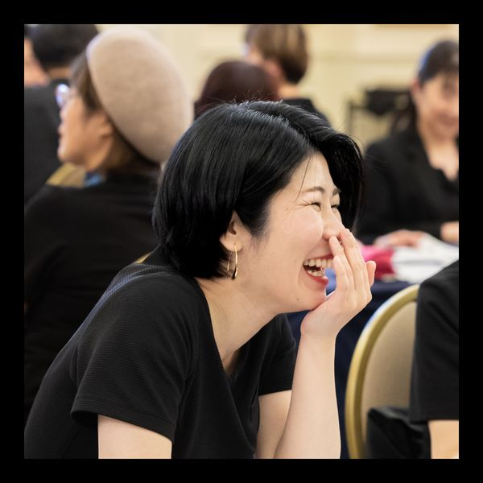
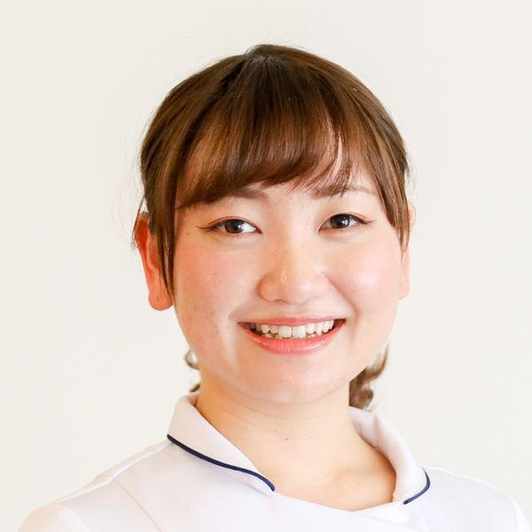

STAFF
担当スタッフのご紹介

鈴木まりこ
Acus 代表 / 院長はり師・きゅう師
肩が痛い、腰痛がつらい、慢性的に頭痛がある、やる気が出ない、眠れない。お客様のお悩みは人それぞれです。困っている症状を改善するのはもちろんですが、その先の幸せや未来に向かってスタートが切れるよう、最高の休息時間をご提供いたします。
Instagram @mari_acus
佐藤かなえ
鍼灸師はり師・きゅう師
JSTAスポーツアロマトレーナー
JAAアロマコーディネーター
今日は頭が痛い、今日は化粧のりが悪いなど、季節・気候によって身体のしんどさも肌の調子も変わるもの。毎回今の身体や肌の状態をお伺いして、変化があればその都度治療方法を変更・追加していきます。お一人お一人に合った方法を探しながら、楽しく快適な生活のためのお手伝いをさせていただきます。
Instagram @kanae.harikyuOur Philosophy
目の前の症状ではなく、
その先の生活へ
「痛みをなくす」だけが目標ではありません。趣味・仕事・家族との時間を全力で楽しめる体づくりを一緒にめざします。
正直な施術を、
誠実に
鍼灸の領域を超えると判断した場合は、積極的に西洋医学へのご受診をご案内します。お客様にとって本当に最善な選択を一緒に考えます。
あなただけの
「身体の取扱説明書」
担当者制で、毎回同じスタッフが対応。体の変化を継続的に把握しながら、あなただけのオーダーメイドケアを提供します。